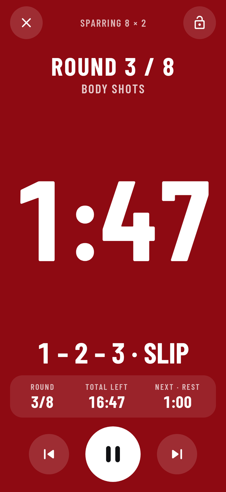
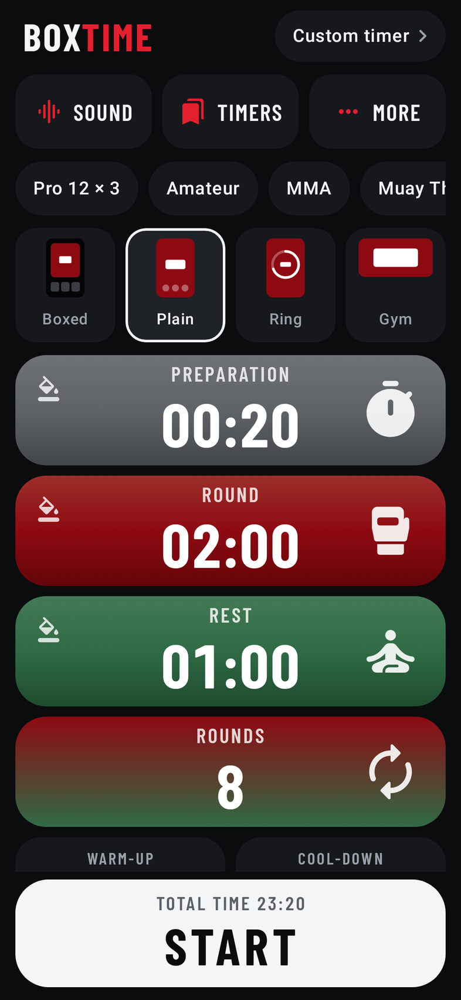
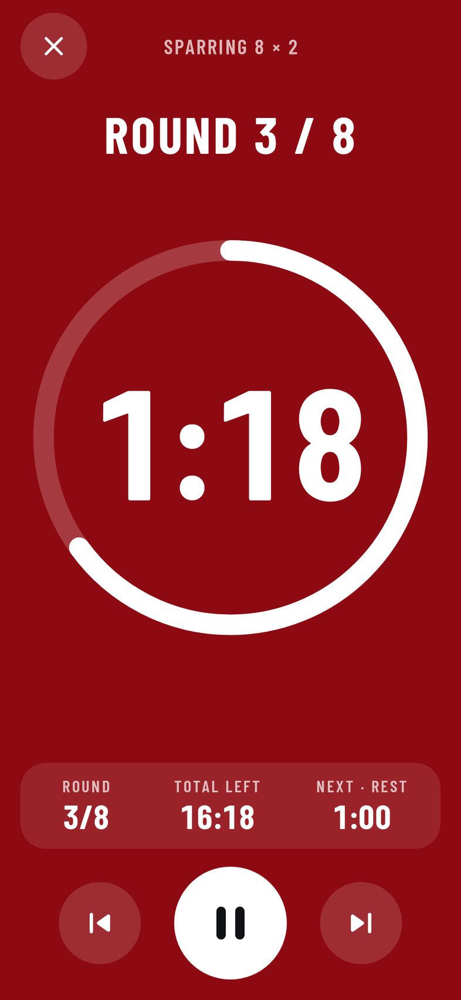
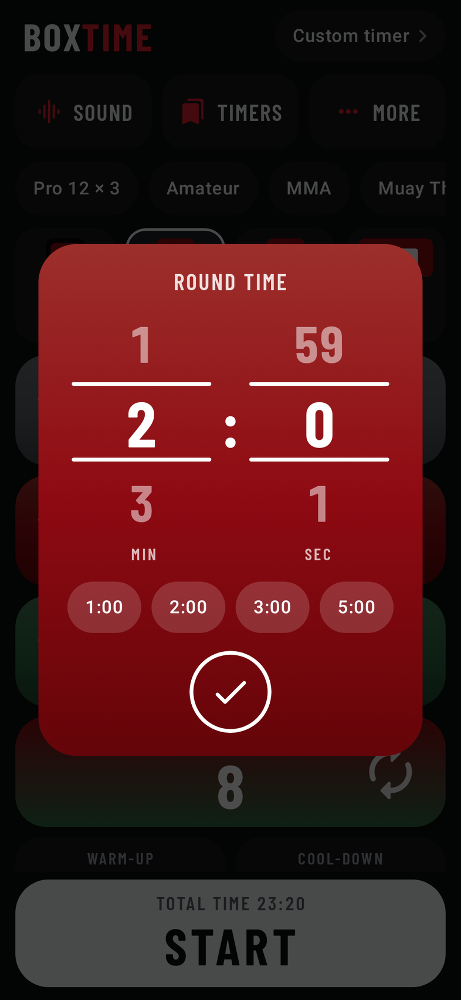
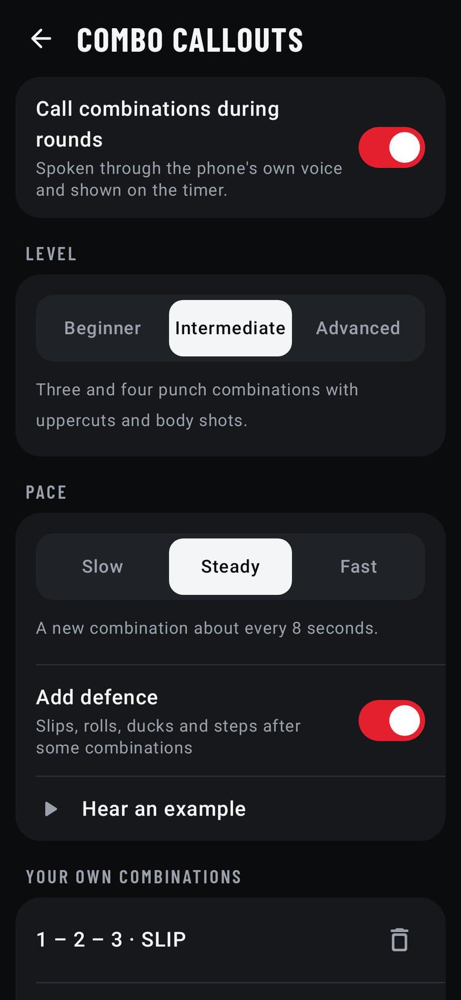
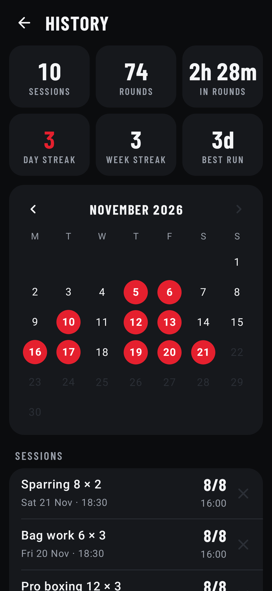
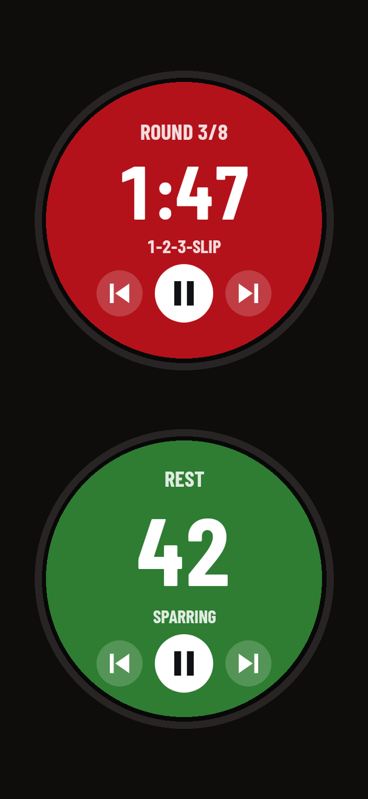

Glove up. BoxTime keeps the rounds.
BoxTime is a boxing round timer for Android. Set the round, the rest and the number of rounds, press Start, and it rings the bell, warns you ten seconds out and counts you back in, with the screen on or off.
It is free, with no adverts and nothing to unlock. There is no account, and your timers and history stay on your phone. A watch app shows the clock on your wrist.
Download for AndroidBoxTime WatchHow to install
- Version 1.0
- Android 10 or later
- 2.8 MB
Free, with nothing to unlock. No adverts, no account with the developer, no tracking. Compare or read the release notes.
Chrome may say the file might be harmful. It shows this for app files that do not come from Google Play. Choose Download anyway.

- No subscriptionEvery feature is in the free app.
- No advertsNone in the app and none on this site.
- No accountYour timers and history stay on your phone.
- Watch appThe round clock on a Wear OS watch.
A look inside
These are the real screens, drawn from the app's own code with made-up timers and sessions. Swipe or scroll sideways to see them all.






How it works
A round timer has one job: keep time so you can keep your hands up. BoxTime does that on one screen, and stays out of the way once the bell goes.
Set the session
Tap a block to change the preparation, round or rest time, or the number of rounds, or tap a preset such as Pro 12 × 3.
Press Start
A countdown to get ready, three beeps, then the bell. The screen turns the colour of the round and the digits fill it.
Train
A clapper warns you before the end of the round, the bell ends it, and a tick calls you back before the rest is up.
Everything is in, and all of it is free
Nothing below is held back for a paid tier, because there is no paid tier.
The timer
- Four timer faces
- Boxed, Plain and Ring for a phone in your hand or on a shelf, and Gym, sideways with digits as big as the screen allows.
- Fifteen fight presets
- Pro and amateur boxing, title fights, white collar, MMA, Muay Thai, kickboxing, bag work, pad work, sparring and more.
- Round plans
- Name each round, such as jab only or body shots, and give any round its own length and rest.
- Warm-up and cool-down
- A timed block before the first round and after the last, each in its own colour.
Sound and voice
- Bells made for the job
- Twenty-one sounds, from a ring bell and a ten-second clapper to an air horn, or a sound file of your own.
- A warning before the bell
- Before the end of each round, and before the end of each rest so you are up in time.
- Spoken cues and combo callouts
- The round, the final round, rest, halfway and seconds left, and punch combinations called by number.
- Your music stays on
- Music dips for the bell and the voice, then comes back.
In the gym
- Screen off, still running
- The lock screen shows the countdown with Pause, Skip and Finish.
- Made for gloves
- Make the whole screen the pause button, with a tap-lock so a stray glove cannot stop the clock.
- On your wrist
- BoxTime Watch, a second download, shows the round and the time left on a Wear OS watch, with pause and skip.
Keeping track
- Saved timers
- As many set-ups as you like, with favourites and a home-screen widget.
- History and streaks
- Every session logged, with a month calendar and your day and week streaks.
- Share a timer
- A QR code or a small file, so a training partner has the same session.
Your training stays on your phone
No servers
BoxTime has no accounts and no servers. The developer receives nothing from the app.
Phone to watch only
The watch app talks only to your own phone.
No ads, no tracking
There is no advertising, analytics or tracking, in the app or on this site.
Installing and updating
BoxTime is not on Google Play, so your phone asks a couple of extra questions the first time.
Download the app file
Tap Download on your phone. The file is called BoxTime.apk and is about 2.8 MB. If Chrome says the file might be harmful, choose Download anyway.
Allow the install
Open the file. The first time, Android asks you to allow your browser to install apps. Allow it, go back and tap Install. If Google Play Protect steps in, choose More details, then Install anyway.
Updating later
BoxTime tells you when a newer version is out. Install the new file over the old one and everything you have saved is kept.
Version 1.0, released 16 November 2026. See the release notes, or check your download.
Questions
Is BoxTime really free?
Yes. There is no paid version, no subscription and no adverts, and nothing in the app is locked. See the comparison.
Is BoxTime on Google Play?
No. BoxTime is a personal project and is downloaded from this site as an Android app file. It needs Android 10 or later, which covers almost every phone sold in recent years.
Does it keep going with the screen off?
Yes. The session runs in the background, the bells and voice still play, and the lock screen shows the countdown with Pause, Skip and Finish. By default the screen stays on while a session runs; a switch in Settings lets it sleep.
Will it stop my music?
No. By default your music dips for the bell and the voice and then comes back. You can have it pause for a moment instead, or leave it alone so the bells play over the top.
Does it need the internet?
No. Everything in a session works offline. BoxTime uses the internet only to check for a newer version when it opens, and the first time you open the QR scanner. The detail is in the privacy policy.
What do the combo numbers mean?
1 is the jab, 2 the cross, 3 the lead hook, 4 the rear hook, 5 the lead uppercut and 6 the rear uppercut. Body after a number sends that punch to the body. Lead means your front hand, so the numbers work for either stance.
Can I use my own bell?
Yes. In Sound, open any signal, choose Add your own sound and pick an audio file from your phone. It is copied into the app, so it still works if you move or delete the original.
How do I put the timer on a TV?
Mirror your phone to the TV, with Smart View on a Samsung phone or with a cable, then start a session. The TV shows its own full-screen clock in the colour of the round or the rest. There is nothing to set up.
Is there a watch app?
Yes, for Wear OS watches such as a Galaxy Watch 4 or later. It shows the countdown, buzzes on the bells and has back, pause and skip buttons. It is a separate download, and because it is not on Google Play it is put on the watch over Wi-Fi. The steps are in the release notes.
How do I move my timers to a new phone?
In Settings, choose Save a backup file. It holds your timers, history and settings in one file. Send it to the new phone, install BoxTime there and choose Restore from a backup file.
How do I update BoxTime?
BoxTime tells you when it opens if a newer version is out. Download it from this site and install it over the one you have. Your timers, history and settings are kept.
Keep your hands up. BoxTime keeps the time
Free, with no adverts and nothing to unlock. Made by the developer of several other free Android apps: see them all.